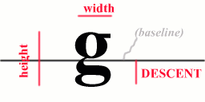

Internal data structure. It represents fragments of parsed HTML page, the so-called cell - a word, picture, table, horizontal line and so on. It is used by wxHtmlWindow and wxHtmlWinParser to represent HTML page in memory.
You can divide cells into two groups : visible cells with non-zero width and height and helper cells (usually with zero width and height) that perform special actions such as color or font change.
継承元
インクルードファイル
<wx/html/htmlcell.h>
See Also
Cells Overview, wxHtmlContainerCell
Members
wxHtmlCell::wxHtmlCell
wxHtmlCell::AdjustPagebreak
wxHtmlCell::Draw
wxHtmlCell::DrawInvisible
wxHtmlCell::Find
wxHtmlCell::GetDescent
wxHtmlCell::GetFirstChild
wxHtmlCell::GetHeight
wxHtmlCell::GetId
wxHtmlCell::GetLink
wxHtmlCell::GetMouseCursor
wxHtmlCell::GetNext
wxHtmlCell::GetParent
wxHtmlCell::GetPosX
wxHtmlCell::GetPosY
wxHtmlCell::GetWidth
wxHtmlCell::Layout
wxHtmlCell::ProcessMouseClick
wxHtmlCell::SetId
wxHtmlCell::SetLink
wxHtmlCell::SetNext
wxHtmlCell::SetParent
wxHtmlCell::SetPos
wxHtmlCell()
Constructor.
virtual bool AdjustPagebreak(int * pagebreak)
This method is used to adjust pagebreak position. The parameter is variable that contains y-coordinate of page break (= horizontal line that should not be crossed by words, images etc.). If this cell cannot be divided into two pieces (each one on another page) then it moves the pagebreak few pixels up.
Returns true if pagebreak was modified, false otherwise
Usage:
while (container->AdjustPagebreak(&p)) {}
virtual void Draw(wxDC& dc, int x, int y, int view_y1, int view_y2)
Renders the cell.
Parameters
dc
x,y
view_y1
view_y2
virtual void DrawInvisible(wxDC& dc, int x, int y)
This method is called instead of Draw when the cell is certainly out of the screen (and thus invisible). This is not nonsense - some tags (like wxHtmlColourCell or font setter) must be drawn even if they are invisible!
Parameters
dc
x,y
virtual const wxHtmlCell* Find(int condition, const void* param)
Returns pointer to itself if this cell matches condition (or if any of the cells following in the list matches), NULL otherwise. (In other words if you call top-level container's Find it will return pointer to the first cell that matches the condition)
It is recommended way how to obtain pointer to particular cell or to cell of some type (e.g. wxHtmlAnchorCell reacts on wxHTML_COND_ISANCHOR condition)
Parameters
condition
param
Defined conditions
| wxHTML_COND_ISANCHOR | Finds particular anchor. param is pointer to wxString with name of the anchor. |
| wxHTML_COND_USER | User-defined conditions start from this number. |
int GetDescent() const
Returns descent value of the cell (m_Descent member). See explanation:

wxHtmlCell* GetFirstChild()
Returns pointer to the first cell in the list. You can then use child's GetNext method to obtain pointer to the next cell in list.
Note: This shouldn't be used by the end user. If you need some way of finding particular cell in the list, try Find method instead.
int GetHeight() const
Returns height of the cell (m_Height member).
virtual wxString GetId() const
Returns unique cell identifier if there is any, empty string otherwise.
virtual wxHtmlLinkInfo* GetLink(int x = 0, int y = 0) const
Returns hypertext link if associated with this cell or NULL otherwise. See wxHtmlLinkInfo. (Note: this makes sense only for visible tags).
Parameters
x,y
virtual wxCursor GetMouseCursor(wxHtmlWindowInterface* window)
Returns cursor to show when mouse pointer is over the cell.
Parameters
window
This function is new since wxWidgets version 2.7.0 (before GetCursor method served a similar purpose, which is now deprecated).
wxHtmlCell* GetNext() const
Returns pointer to the next cell in list (see htmlcell.h if you're interested in details).
wxHtmlContainerCell* GetParent() const
Returns pointer to parent container.
int GetPosX() const
Returns X position within parent (the value is relative to parent's upper left corner). The returned value is meaningful only if parent's Layout was called before!
int GetPosY() const
Returns Y position within parent (the value is relative to parent's upper left corner). The returned value is meaningful only if parent's Layout was called before!
int GetWidth() const
Returns width of the cell (m_Width member).
virtual void Layout(int w)
This method performs two actions:
It must be called before displaying cells structure because m_PosX and m_PosY are undefined (or invalid) before calling Layout.
virtual bool ProcessMouseClick(wxHtmlWindowInterface* window, const wxPoint& pos, const wxMouseEvent& event)
This function is simple event handler. Each time the user clicks mouse button over a cell within wxHtmlWindow this method of that cell is called. Default behavior is to call wxHtmlWindow::LoadPage.
Note
If you need more "advanced" event handling you should use wxHtmlBinderCell instead.
Parameters
window
pos
event
Return value
true if a link was clicked, false otherwise.
This function is new since wxWidgets version 2.7.0 (before OnMouseClick method served a similar purpose).
void SetId(const wxString& id)
Sets unique cell identifier. Default value is no identifier, i.e. empty string.
void SetLink(const wxHtmlLinkInfo& link)
Sets the hypertext link associated with this cell. (Default value is wxHtmlLinkInfo("", "") (no link))
void SetNext(wxHtmlCell *cell)
Sets the next cell in the list. This shouldn't be called by user - it is to be used only by wxHtmlContainerCell::InsertCell.
void SetParent(wxHtmlContainerCell *p)
Sets parent container of this cell. This is called from wxHtmlContainerCell::InsertCell.
void SetPos(int x, int y)
Sets the cell's position within parent container.